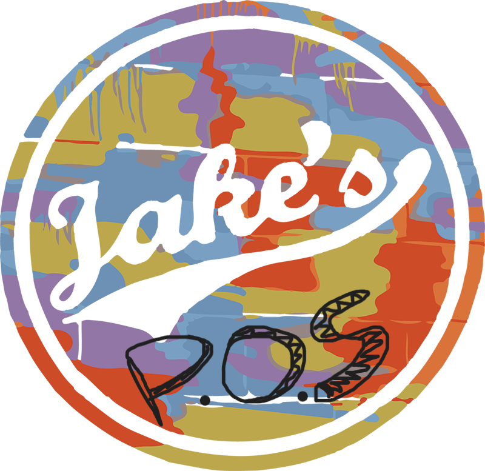

Jake's of Columbia - Restaurant POS System
Jake's of Columbia is getting a modern, easy-to-use restaurant and bar POS system that lets staff quickly manage tabs, orders, and payments while giving managers clear insight into inventory, sales, and staffing.